claude-code 101
2026年04月15日
CLAUDE.mdの役割
3階層と優先順位
編集と参照
設計指針
/init で初期生成し，プロジェクトの規約・アーキテクチャをエージェントの外部記憶として渡す
/init を一度走らせるとリポジトリ全体を解析し，サマリー・主要ファイル・アーキテクチャ を雛形として書き出す
コンテキスト管理上の位置付け
/clear や /compact を跨いで保持される@ で都度参照する設計が望ましいCLAUDE.mdの役割
3階層と優先順位
編集と参照
設計指針
3階層は理想論では順序ではなくスコープの違い：チーム規約と個人のパターンを分離して置く
Project
./CLAUDE.md or .claude/CLAUDE.md/init で生成されるファイルLocal
./CLAUDE.local.md.gitignore で個人専用Machine
~/.claude/CLAUDE.mdSubdirectory > Project > User の順に，cwdに近い指示で上書きされる
Anthropic Docsの記述
優先度の階段とロードタイミング
record1:
category: ① 弱<br>User
rule:
- パス：<code>~/.claude/CLAUDE.md</code>
actions:
- スコープ：ログインユーザーの<span class="regmonkey-bold">全プロジェクト</span>
- ロード：セッション起動時に自動読込
record2:
category: ② 中<br>Project
rule:
- パス：<code>./CLAUDE.md</code>（cwd直下）
actions:
- スコープ：当該<span class="regmonkey-bold">プロジェクト全体</span>
- ロード：セッション起動時に自動読込
record3:
category: ③ 強<br>Subdir
rule:
- パス：<code>./<subdir>/CLAUDE.md</code>
actions:
- スコープ：当該<span class="regmonkey-bold">サブディレクトリ配下のみ</span>
- ロード：配下ファイルに触れた時点で<span class="regmonkey-bold">オンデマンド読込</span>同一トリガー語に異なる応答を仕込み，どの階層が勝つかを段階的に観察する
セットアップ：3階層に同じトリガーを置く
CLAUDE.md に「precedence-test と入力されたら LEVEL=USER・LEVEL=PROJECT・LEVEL=SUBDIR のいずれかを返答」と互いに矛盾する指示を仕込むprecedence-test と入力し，claude codeからのレスポンスを確認するrecord1:
検証: Test 1<br>Project > User
Action:
- 新セッションで <code>precedence-test</code> を送信
結果:
- <code>LEVEL=PROJECT</code>（User より Project が勝つ）
- この時点では Subdir はまだ未ロードのため候補外
record2:
検証: Test 2<br>Subdir > Project
Action:
- <code>subdir/sample.txt を読んで</code> で Subdir をロードさせ <code>precedence-test</code>
結果:
- <code>LEVEL=SUBDIR</code>（Project より Subdir が勝つ）
- <span class="regmonkey-bold">オンデマンドロードのトリガー</span>を踏むのが要点
record3:
検証: Test 3<br>User 単独
Action:
- <code>mv CLAUDE.md CLAUDE.md.bak</code> で Project を退避し新セッションで送信
結果:
- <code>LEVEL=USER</code>（上位階層が無いと User が露出）CLAUDE.mdの役割
3階層と優先順位
編集と参照
設計指針
#メモリ入力と@ファイル参照で日常運用するCLAUDE.mdへの追記は#，その場限りの取り込みは@，と書込みと参照の手段を分ける
# メモリモードで永続化
# を付けると メモリモード に切替# で記録 のセットが一般的# このプロジェクトでは pnpm を使う@ でその場限りに取込み
@filepath と書くと そのファイル内容をセッションに添付@docs/spec.md と書けば リンクされたファイルも自動展開@ 参照に切り出す と肥大化を防げる@src/db/schema.ts に沿って実装してCLAUDE.mdの役割
3階層と優先順位
編集と参照
設計指針
毎リクエストに添付されるためノイズはコストに直結する：書く・書かないの線引きを明確に
record1:
category: 書くべきこと
rule:
- エージェントが<span class="regmonkey-bold">毎回参照しないと判断を誤る</span>前提を集約
actions:
- 主要コマンド（テスト・lint・dev起動）
- リポジトリ構造の地図と主要ディレクトリの責務
- 命名規約・コード規約・コミットメッセージ規約
- DBスキーマや型定義など重要ファイルへの <code>@</code> 参照
record2:
category: 書かないこと
rule:
- <span class="regmonkey-bold">必要時に取り込めば足りる</span>情報は本体に積まない
actions:
- 個別タスクの一時的な指示はセッションで渡す
- 巨大なAPIリファレンスや生コードは <code>@</code> で都度参照
- 「いつか使うかも」の機能説明は別ドキュメントへ
- 機密情報（鍵・トークン）は絶対に書かない
record3:
category: 階層の選択
rule:
- スコープに合わせ<span class="regmonkey-bold">3階層へ振り分け</span>る
actions:
- チーム共有の規約 → Project（コミット対象）
- 個人の実験的指示 → Local（gitignore）
- 言語選好や返答スタイル → User（マシン全体）
record4:
category: 改善ループ
rule:
- <span class="regmonkey-bold">繰り返しの修正を観測したら即追記</span>する
actions:
- Escapeで停止 → <code>#</code> で予防策をメモリに記録
- 同じ指摘を2回したら本体に昇格させる
- 不要になった項目は積極的に削除し肥大化を抑える
- 定期的に通読し，現実とのズレを是正するRegmonkey Presentation. ©Ryo Nakagami. All rights reserved.